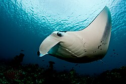

source("vignette-utils.R")
1 Introduction
This vignette walks you through the process of downloading, cleaning, and analyzing occurrence data for Manta Rays in Australia. The data is sourced from the Atlas of Living Australia (ALA), enriched with weather metadata, and visualized using custom functions.
2 Load Required Packages and Utilities
All helper functions are stored in vignette-utils.R:
You can edit this file at:ecotourism/vignettes/vignette-utils.R
3 Define Global Parameters
organism_name <- "manta_rays"
organism_title <- "Manta Rays"
taxa <- "Mobula alfredi"
start <- 2014
end <- 2024
email <- "your_email@gmail.com"4 Step 1: Download and Prepare Data
organism <- obs_data(taxa, start, end, your_email=email) |>
polished_data() |>
filter(scientificName == "Mobula alfredi")5 Step 2: Save Cleaned Dataset
mysave(organism_name, organism)6 Step 3: Attach Nearest Weather Station
attach_nearest_station(organism_name)7 Step 4: Load and Preview Final Dataset
8 Data Analysis
8.1 Preview Dataset
organism <- myload(organism_name)
organism |> slice_head(n = 3) |> as_tibble() |> glimpse()8.2 Occurrence by State
organism |> my_count(scientificName, obs_state, f=1) |> as_tibble()9 Visualization
9.1 Spatial Distribution Map
organism |> plot_map1(color_by = scientificName)9.2 Weekly Trends
organism |> plot_bar_week()9.3 Monthly Trends
organism |> plot_bar_month()9.4 Yearly Trends
organism |> plot_bar_year()10 Weather Station Mapping
attach_nearest_station(organism_name)
organism <- myload(organism_name)
organism |> glimpse()10.1 State-wise Weather Matching Summary
summarize_state_frequencies(organism_name)Interpretation:
Queensland:
884 observations; 888 matched with QLD weather stations.Western Australia:
84 observations; 127 matched with WA stations — implying cross-state assignment.
11 Pattern Analysis
plot_monthly_occurrences_by_state(organism_name)
plot_weekly_occurrences_by_state(organism_name)
plot_seasonal_occurrence_polar(organism_name)
plot_monthly_occurrence_map(organism_name)
plot_monthly_occurrence_map_by_state(organism_name)
plot_monthly_distribution_map(organism_name)12 Conclusion
You now know how to:
- Retrieve and clean occurrence data for Manta Rays
- Attach nearest weather station metadata
- Explore distribution patterns in space and time
This reproducible workflow can be adapted for other marine species or ecotourism-relevant taxa in Australia.
13 Final Output
This is the glimps of your final data :
Rows: 1,088
Columns: 14
$ obs_lat <dbl> -33.93000, -33.93000, -33.93000, -33.80058, -33.80012, …
$ obs_lon <dbl> 151.3500, 151.3500, 151.3500, 151.2955, 151.2969, 151.2…
$ date <date> 2014-01-04, 2015-07-28, 2014-08-07, 2024-12-22, 2024-1…
$ time <chr> "00:00:00", "00:00:00", "00:00:00", "11:44:00", "12:50:…
$ year <dbl> 2014, 2015, 2014, 2024, 2024, 2024, 2014, 2017, 2017, 2…
$ month <dbl> 1, 7, 8, 12, 12, 12, 4, 3, 2, 2, 2, 3, 2, 2, 11, 3, 3, …
$ day <dbl> 4, 28, 7, 22, 22, 22, 25, 4, 27, 27, 26, 3, 26, 22, 29,…
$ hour <int> 0, 0, 0, 11, 12, 8, 6, 0, 0, 0, 0, 0, 0, 0, 0, 0, 0, 0,…
$ weekday <ord> Saturday, Tuesday, Thursday, Sunday, Sunday, Sunday, Fr…
$ dayofyear <dbl> 4, 209, 219, 357, 357, 357, 115, 63, 58, 58, 57, 62, 57…
$ scientificName <chr> "Mobula alfredi", "Mobula alfredi", "Mobula alfredi", "…
$ record_type <chr> "MACHINE_OBSERVATION", "MACHINE_OBSERVATION", "MACHINE_…
$ obs_state <chr> NA, NA, NA, "New South Wales", "New South Wales", "New …
$ ws_id <chr> "947800-99999", "947800-99999", "947800-99999", "957680…